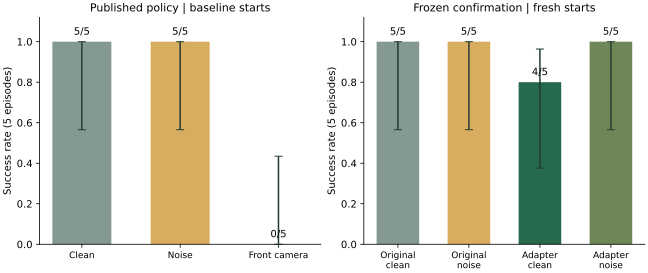
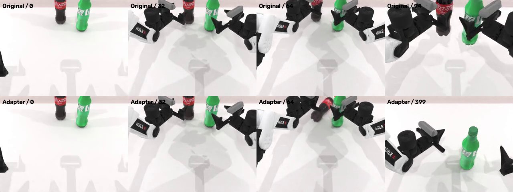
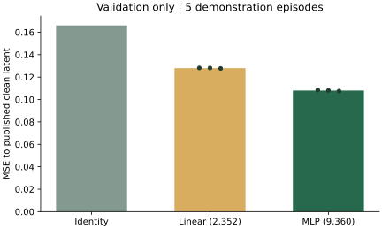
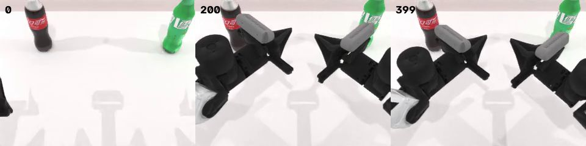
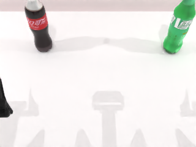
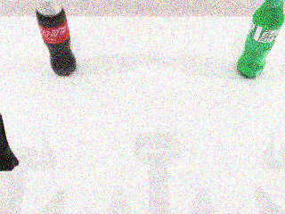
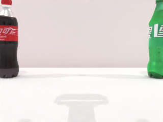
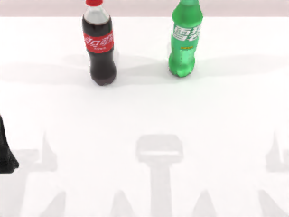
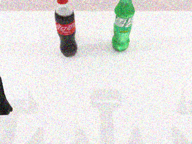

恢复表征，
是否改善动作？
潜变量恢复误差降低 35.0%；固定场景闭环：干净 5/5→4/5，噪声 5/5→5/5（原策略→适配器）。
出现新增失败，暂不建议启用这个恢复适配器。
完成 35 次配对闭环：15 次发布策略扰动评测，加 20 次独立初始状态下的原策略／适配器对照。训练只用了 9,360 参数的残差模块；完整发布策略、DINO、S-VAE 和归一化保持冻结。
发布策略：噪声与相机替换
| 条件 | 成功次数 | Wilson 95% 区间 | 平均动作数（包含失败） | 实际场景种子 |
|---|---|---|---|---|
| 发布策略 · 干净 | 5/5 | 56.6–100.0% | 105.6 | 200001, 200002, 200003, 200004, 200005 |
| 发布策略 · 噪声 | 5/5 | 56.6–100.0% | 98.6 | 200001, 200002, 200003, 200004, 200005 |
| 发布策略 · 换为前方相机 | 0/5 | 0.0–43.4% | 400.0 | 200001, 200002, 200003, 200004, 200005 |
只在主相机加入 σ=0.10 的 RGB 高斯噪声（0–1 尺度），经过裁剪和 uint8 量化；腕部图像、状态和指令保持一致。前方相机替换是固定相机间迁移，不是小视角抖动。初始输入检查显示取景及物体尺度明显变化、部分瓶身被裁切，因此这个条件的失败不能单独归因于压缩表征；它同时改变了可见信息与相机几何。官方专家可行性过滤保留，实际通过的场景种子列在表中。
独立初始状态：适配器是否有效
| 条件 | 成功次数 | Wilson 95% 区间 | 平均动作数（包含失败） | 实际场景种子 |
|---|---|---|---|---|
| 原策略 · 干净 | 5/5 | 56.6–100.0% | 100.0 | 300001, 300002, 300003, 300004, 300005 |
| 原策略 · 噪声 | 5/5 | 56.6–100.0% | 94.0 | 300001, 300002, 300003, 300004, 300005 |
| 适配器 · 干净 | 4/5 | 37.6–96.4% | 161.0 | 300001, 300002, 300003, 300004, 300005 |
| 适配器 · 噪声 | 5/5 | 56.6–100.0% | 96.4 | 300001, 300002, 300003, 300004, 300005 |

| 条件 | 新增成功 | 新增失败 | 相同结局 | 双侧配对精确 p 值 |
|---|---|---|---|---|
| 干净 | 0 | 1 | 4 | 1.0000 |
| 噪声 | 0 | 0 | 5 | 1.0000 |
确认组额外遇到专家过滤接受名单不一致：场景 300002 在干净参考中被接受、在噪声组却被跳过，且过滤发生在噪声施加前。因此在任何适配器闭环结果出现前，固定首个参考运行的专家可行场景及原始指令，四组全部重跑。每条轨迹首个动作前核对参考图像和状态，汇总再核对所有配对，全部一致。这是明确记录的协议修正，不是原计划下独立重复过滤。修正原因 · 固定场景名单。扩散噪声固定种子 42，每次生成使用相同设置。最后一个适配器噪声进程的计数器记录执行 45 次（该计数器每次服务器重启归零，并非全部十条轨迹的总和），该进程观测潜变量最大改动 1.8125；未来槽位逐次核对未变。
小样本不能确认总体性能下降，但这批固定场景中的新增失败，已经说明离线恢复门槛不能保证每条轨迹的控制行为保留。配对检验只使用结局不同的轨迹。5 次足以发现集成故障或较大现象，但不足以排除中小效应；所有结果保留，不基于测试成功率重选模型。
一条新增失败：相同起点，抓取结果不同
Seed 300003：最终固定名单对照的原策略 94 步成功，适配器运行到 400 步仍失败。下图上排是原策略，下排是适配器；前面几列为相同录像帧，最后一列为各自的末帧。可见适配器轨迹中红瓶发生倾倒。这里只是定性观察，不是接触标注，也尚未识别具体潜变量维度的因果作用。

所有场景的视频仍完整保留。这是一个观察到的反例，不代表跨任务的总体性能估计。
最小改动：恢复原潜空间坐标
原发布编码器先把图像编码为归一化后的 48 通道潜变量，再添加零初始化残差：1×1 卷积 48→96、GELU、1×1 卷积 96→48。只改当前观测帧。这样目标仍在原策略使用的坐标系中，避免直接替换新压缩器造成接口失配。
| 候选 | 参数量 | 噪声恢复 MSE | 相对原误差 | 干净输入改动 MSE | 是否过门槛 |
|---|---|---|---|---|---|
| linear | 2352 | 0.12793 | 0.770 | 0.01060 | 是 |
| mlp | 9360 | 0.10800 | 0.650 | 0.00766 | 是 |

35 条训练演示、5 条验证演示；每条 12 帧，训练两份独立噪声、验证一份，共 900 个噪声配对。10 条演示测试轨迹未打开。两个候选 × 三个种子，各 2,000 步；损失为恢复误差加等权干净恒等误差，未做超参数搜索。
先按验证集选择 MLP，再固定部署种子 42。门槛是恢复 MSE 至少降低 10%，干净改动 MSE 不超过原噪声误差的 10%。MLP 恢复误差降低 35.0%（三种子均值，实际部署种子 42 为 34.7%），干净改动占原噪声误差的 4.6%。全编码器与独立提取器的数值一致性检查差为 0。
补充诊断（不参与选型）：原潜变量每个 token 的通道 RMS 约为 1，适配后干净输入约为 0.985，噪声输入约为 0.962。坐标相同不代表输出分布完全相同；这些变化是否影响动作必须由闭环结果判断。完整潜变量统计与布局区域误差。
发现并修复语言种子缺口
RoboTwin 在场景初始化时只固定 NumPy 与 Torch，指令生成却使用 Python 的 random.shuffle / choice。相同场景种子因此可能配到不同语言，混淆表征消融。独立 CPU 复现：五种 Python 随机状态产生五份原始指令列表；按场景种子局部固定后为同一份列表，外部随机状态保持不变。
初次语言未配对的 5 条已完成工程记录，以及专家重复过滤导致不匹配的 7 条已完成记录和中断日志，全部归档，未混入最终 35 次配对统计。发现问题后对所有条件统一修复并重跑；模型、噪声强度、种子范围和模型选择规则保持原样；确认场景改为参考名单固定重放。补丁仅供审阅，未发送 PR。
最小语言种子补丁 上游真实代码复现OpenWAM 侧也已准备默认关闭的可选开关 ROBOTWIN_SCENE_SEEDED_LANGUAGE=1，无需修改外部 RoboTwin。6 项单元测试、格式检查以及真实上游指令生成对照通过。OpenWAM 补丁 · 集成验证 · PR 草稿。
此前发现的结果分母错误仍保留原始输出：本页按实际成功数／5 汇报，汇总器交叉核验日志与逐轨迹记录，避免把 5 次误除以 100。
全部闭环视频与实际输入
视频由仿真器记录干净主相机画面；每组另外展示实际送入策略的初始图像，因此噪声与前方替换在输入预览中可见。没有筛选成功案例，35 段全部保留。
第一条相机迁移失败的主相机录像采样（帧 0、200、399），只是定性展示，不是接触事件标注：

发布策略 · 干净 · 5/5 · 全部五次
首个 episode 的实际主相机输入：

Seed 200001 · 成功 · 105 步
Pick up the plastic soda bottle and the green bottle simultaneously.
Seed 200002 · 成功 · 102 步
Pick the brown bottle with one arm, the green plastic bottle with ridged bottom with the other.
Seed 200003 · 成功 · 103 步
Pick up the brown bottle and the green bottle simultaneously.
Seed 200004 · 成功 · 109 步
Grab the plastic soda bottle and the green plastic bottle with ridged bottom with arms.
Seed 200005 · 成功 · 109 步
Lift the bottle with red screw cap and the green bottle with white label using both arms.
发布策略 · 噪声 · 5/5 · 全部五次
首个 episode 的实际主相机输入：

Seed 200001 · 成功 · 91 步
Pick up the plastic soda bottle and the green bottle simultaneously.
Seed 200002 · 成功 · 88 步
Pick the brown bottle with one arm, the green plastic bottle with ridged bottom with the other.
Seed 200003 · 成功 · 102 步
Pick up the brown bottle and the green bottle simultaneously.
Seed 200004 · 成功 · 106 步
Grab the plastic soda bottle and the green plastic bottle with ridged bottom with arms.
Seed 200005 · 成功 · 106 步
Lift the bottle with red screw cap and the green bottle with white label using both arms.
发布策略 · 换为前方相机 · 0/5 · 全部五次
首个 episode 的实际主相机输入：

Seed 200001 · 失败 · 400 步
Pick up the plastic soda bottle and the green bottle simultaneously.
Seed 200002 · 失败 · 400 步
Pick the brown bottle with one arm, the green plastic bottle with ridged bottom with the other.
Seed 200003 · 失败 · 400 步
Pick up the brown bottle and the green bottle simultaneously.
Seed 200004 · 失败 · 400 步
Grab the plastic soda bottle and the green plastic bottle with ridged bottom with arms.
Seed 200005 · 失败 · 400 步
Lift the bottle with red screw cap and the green bottle with white label using both arms.
原策略 · 干净 · 5/5 · 全部五次
首个 episode 的实际主相机输入：

Seed 300001 · 成功 · 105 步
Use one arm to grab the bottle with red screw cap, the other for the green bottle with white label.
Seed 300002 · 成功 · 105 步
Pick up the bottle with red screw cap and the green plastic bottle with ridged bottom using both arms.
Seed 300003 · 成功 · 94 步
Pick the bottle with red screw cap, then pick the green bottle with white label.
Seed 300004 · 成功 · 107 步
Pick the brown bottle with one arm, the green bottle with white label with the other.
Seed 300005 · 成功 · 89 步
Pick the plastic soda bottle, then pick the green plastic bottle with ridged bottom.
原策略 · 噪声 · 5/5 · 全部五次
首个 episode 的实际主相机输入：

Seed 300001 · 成功 · 89 步
Use one arm to grab the bottle with red screw cap, the other for the green bottle with white label.
Seed 300002 · 成功 · 89 步
Pick up the bottle with red screw cap and the green plastic bottle with ridged bottom using both arms.
Seed 300003 · 成功 · 111 步
Pick the bottle with red screw cap, then pick the green bottle with white label.
Seed 300004 · 成功 · 92 步
Pick the brown bottle with one arm, the green bottle with white label with the other.
Seed 300005 · 成功 · 89 步
Pick the plastic soda bottle, then pick the green plastic bottle with ridged bottom.
适配器 · 干净 · 4/5 · 全部五次
首个 episode 的实际主相机输入：

Seed 300001 · 成功 · 105 步
Use one arm to grab the bottle with red screw cap, the other for the green bottle with white label.
Seed 300002 · 成功 · 104 步
Pick up the bottle with red screw cap and the green plastic bottle with ridged bottom using both arms.
Seed 300003 · 失败 · 400 步
Pick the bottle with red screw cap, then pick the green bottle with white label.
Seed 300004 · 成功 · 107 步
Pick the brown bottle with one arm, the green bottle with white label with the other.
Seed 300005 · 成功 · 89 步
Pick the plastic soda bottle, then pick the green plastic bottle with ridged bottom.
适配器 · 噪声 · 5/5 · 全部五次
首个 episode 的实际主相机输入：

Seed 300001 · 成功 · 105 步
Use one arm to grab the bottle with red screw cap, the other for the green bottle with white label.
Seed 300002 · 成功 · 88 步
Pick up the bottle with red screw cap and the green plastic bottle with ridged bottom using both arms.
Seed 300003 · 成功 · 93 步
Pick the bottle with red screw cap, then pick the green bottle with white label.
Seed 300004 · 成功 · 106 步
Pick the brown bottle with one arm, the green bottle with white label with the other.
Seed 300005 · 成功 · 90 步
Pick the plastic soda bottle, then pick the green plastic bottle with ridged bottom.
可复现记录与贡献边界
当前可独立贡献：配对观测扰动评测、语言种子修复、以及保持原潜空间的可选残差适配器实验。是否建议模型默认启用，应由更大规模闭环证据决定。
发布策略版本 af1595c8，OpenWAM 7c5861e，RoboTwin 0aeea2d。同步 10 步去噪、DiT 缓存开启、编译关闭、400 动作上限、无规划器回退。曾尝试复用训练卡，但启动前发现已有其他作业，预检自动中止；确认评测恢复在原卡串行运行，全部配对使用同一张卡。运行安排调整记录。与论文全量协议仍有范围与编译设置差异。